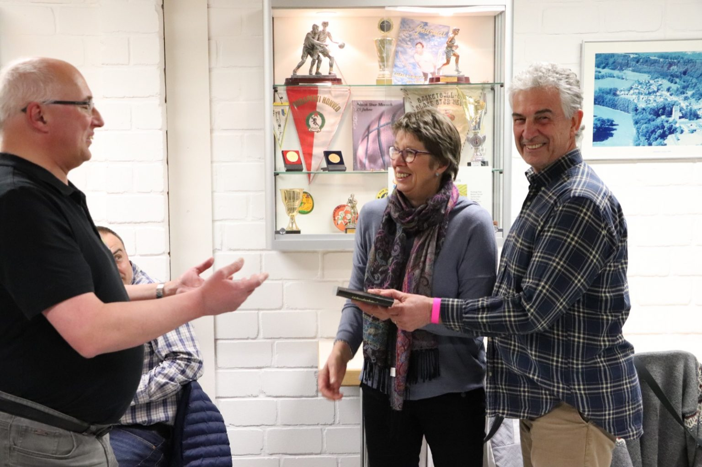
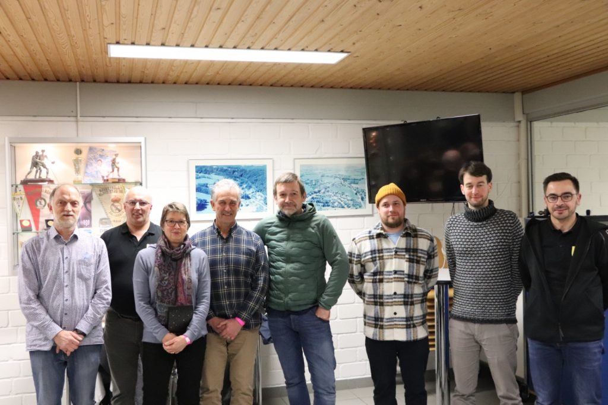

Nom Match vun eiser Härenekipp den 21.1, huet de Comité vum Black Star 2 ganz al Compagnon de Route vum Black Star Merci gesot. De Romain Besenius an d'Marcy Dahm-Besenius hu wéi kee aneren an de leschten 18 Joer de Veräi mat op hire Schëllere gedroen.
De Romain an d'Marcy hunn eng laang Karriär am Basket, mat Statiounen zu Dikrech, an der Fiels an zu Hiefenech ier se op Miersch komm sinn.
Allebéid sinn si 2004 bei de Black Star komm a säit dem waren se an alle Funktiounen aktiv. De Romain Besenius war 2004 an 2008 Jugendtrainer an de verschiddene Kategorien. An der Saison 2008-2009 war hien Assistant Coach bei der Härenekipp ënnert dem Headcoach Rainer Kloss. Ab 2012 a bis 2020 war hien erëm Jugendtrainer. De Romain war vun 2006 bis 2008 an der Jugendkommissioun vum Black Star an ass 2007 Directeur sportif vum Veräi ginn. Dat ass en och bliwwe bis 2020. An där Zäit war hien och am Comité vum Traditiounsveräin. Als Directeur sportif huet de Romain vun al Match eng Videodokumentatioun gemaach déi de Coach an d'Spiller sech konnten ab dem Dag nom Match ukucke fir sech weiderzëentwéckelen.
D'Marcy Dahm-Besenius war grad sou intensiv iwwert al déi Jore verbonne mam Black Star. Tëschent 2004 an 2020 huet d'Marcy an deene meeschte Saisonen Ekippen trainéiert, d'Cadetten, d'Dames B an och déi ganz jonk Memberen, d'Poussins, Prépoussins an de Babybasket. D'Marcy war wéi de Romain tëschent 2006 an 2008 an der Jugendkommissioun, als Sekretärin. Ab 2006 war d'Marcy am Comité vum Black Star an ab 2007, a bis 2020, Sekretärin vu Veräin. Do niewendrun gouf et all déi aner Aufgaben, de Bou, d'Auer, d'Statistiken, d'Wäsch vun der Härenekipp no al Match.
Jiddereen dee Basket spillt oder sech an engem Veräin engagéiert, weess wat dat do bedeit. Stonnen a Stonnen al Woch, al Weekend fir de Veräin, an dat iwwer Joren, ëmmer do, säi Liewen zum Deel organiséieren en fonction vum Kalenner vum Championnat an den Ekippen.
Ouni de Romain an d'Marcy hätt de Black Star Mersch an de Jore säit 2004 net sou kënne bestoe wéi dat Fall war. Niewent villen anere Benevollen déi alleguer hiert bäigedroen hunn, hunn si de Veräi mat op hire Schëllere gedroen.
Dofir wollt de Comité hinnen e Merci ausdrécken. Et war e klenge Cadeau den net an der Relatioun steet mat dem wat si geleescht hunn, mee den awer d'Dankbarkeet vum aktuelle Comité ausdréckt fir déi Aarbecht déi gemaach gouf.
Merci Romain, merci Marcy!